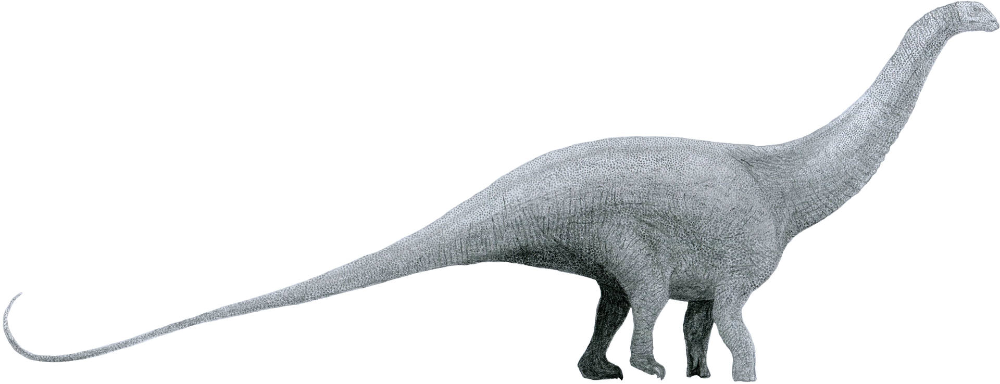

Brontosaurus

Merkmale
Brontosaurus ist einer der am besten bekannten Sauropoden. Das sehr große quadrupede Tier besaß einen langen Hals und einen langen, peitschenartigen Schwanz. Er war nicht so lang wie der verwandte, ähnlich gebaute Diplodocus, und mit einem geschätzten Gewicht von 30 t nicht so schwer wie Apatosaurus (35 t). Wie alle Sauropoden war er ein Pflanzenfresser.
Zu den diagnostischen Merkmalen, mit deren Hilfe die Gattung Brontosaurus von anderen Apatosaurinae (Apatosaurus und eine bisher unbeschriebene Gattung, AMNH 460) unterschieden werden kann, gehören die Dornfortsätze auf den vorderen Rückenwirbeln, deren Basis länger ist als breit, sowie die Morphologie von Scapula und Astragalus. Ein Schädel wurde bis heute nicht gefunden.
Systematik
Brontosaurus und die Typusart Brontosaurus excelsus wurden 1879 durch den amerikanischen Paläontologen Othniel Charles Marsh beschrieben. Grundlage war ein bei Como Bluff gefundenes Skelett, bei dem der Schädel allerdings fehlte. Man nahm an, dass Brontosaurus einen kurzen, hohen Schädel hatte, ähnlich wie Camarasaurus, dessen fossile Überreste ebenfalls aus Como Bluff stammten und der schon 1877 beschrieben wurde. Das rekonstruierte Skelett wurde als erstes Sauropoden-Skelett im American Museum of Natural History in New York ausgestellt. Im Jahr 1903, kurz nach Marshs Tod, untersuchte ein Team des Field Museum of Natural History in Chicago das Skelett eines großen Sauropoden, der sowohl Brontosaurus als auch Apatosaurus stark ähnelte, und kam zu dem Schluss, dass alle drei zu einer Gattung gehören mussten. Da Apatosaurus zuerst beschrieben wurde, zwei Jahre vor Brontosaurus, wurde dieser Name nach der Prioritätsregel der Internationalen Regeln für die Zoologische Nomenklatur (ICZN) der gültige. Im April 2015 wurde Brontosaurus bei einer Revision der Diplodocidae wieder revalidiert.